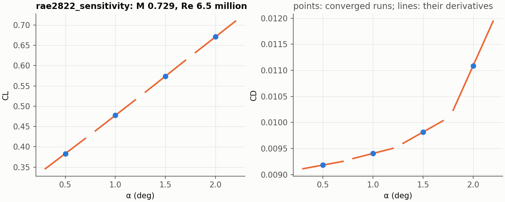

Derivatives¶
A converged result gives the derivatives of its force coefficients with respect to the angle of attack and the Mach number, exact for the discrete solution, at the cost of one linear solve per parameter:
from jaxrans import load_case, run, sensitivity
result = run(load_case("examples/naca0012_laminar",
("numerical.convergence.forces_tol=null",)))
s = sensitivity(result, outputs=("cl", "cd"), parameters=("alpha", "mach"))
print(s.summary())
s.derivatives["cl"]["alpha"] # dCL/dalpha, per degree
outputs are any of cl, cd, cm and cd_friction; parameters are
alpha (in degrees) and mach (at a fixed Reynolds number, so the viscosity
mu_inf = M / Re changes with it).
Method¶
At a converged state the residual vanishes, R(U*(p), p) = 0, for every
value of the parameters p. Differentiating that identity gives the
derivative of the state, and with it the derivative of any output J(U, p):
dR/dU · dU/dp = -∂R/∂p, dJ/dp = ∂J/∂p + ∂J/∂U · dU/dp
One linear solve per parameter gives every output at once (the tangent, or
forward, mode). dR/dU is the Jacobian of the residual the run converged,
second order with its limiter, never assembled: its products with a vector
come from jax.linearize. ∂R/∂p and ∂J/∂p are forward-mode derivatives
with respect to the freestream, which is how the parameters enter.
The linear system is solved by defect correction,
x ← x + G (b - A x), A = dR/dU, b = -∂R/∂p,
where G is the linear solve of the implicit solver's own Newton step at the
end of its CFL ramp: GMRES on V/Δt + dR̃/dU (R̃ the first-order
residual), preconditioned by the line solves. The iteration is the implicit
solver linearized at the converged state, so it converges as the solver does,
here about half an order of magnitude every 50 steps. Krylov methods applied
to A directly, with the line preconditioner, stall on the exact Jacobian of
the second-order scheme (the design notes give the measurements).
The code is in solvers/sensitivity.py (the linear algebra, for any
residual and outputs) and derivatives.py (the case's residual, forces and
Newton solve).
What it needs¶
- A converged state. The formulas hold where
R = 0; the derivative is as good as the convergence. Converge to round-off for derivatives to many digits:convergence.forces_tolnull, so the run is not stopped when its forces have settled, andtol1e-12 (the default). - A differentiable discretization.
minmodandvan_albadacut the slope to zero at a local extremum, a kink: the derivative of the discrete solution is not defined where a cell sits on it, and near a shock some cell always does. On the transonic NACA 0012 of the quickstart notebook (Euler, M 0.75, 2 deg)van_albadaputs the derivative 2e-3 from finite differences;van_albada_smooth, the limiter's original form without the cut, 5e-7 (central differences extrapolated from steps of 0.005 and 0.0025 deg). Usevan_albada_smoothwith a shock,nonefor smooth flow.
linear_residuals reports the relative residual of every solve; it should
be below the requested tol (1e-10 by default). The iteration converges as
the implicit solver does, so where the solver stalls, it stalls too: the
RAE 2822 below at 2.5 deg (with van_albada), where the run reaches 7.7
orders in 6000 steps, leaves its linear solve at 7e-5. Converge the run
first; raising maxiter helps only when the solve is still falling.
A polar with its derivatives¶

python scripts/sensitivity_polar.py examples/rae2822_sensitivity --alpha 0.5 2.0 0.5
converges examples/rae2822_sensitivity (SA, M 0.729, Re 6.5 million, a
generated 288 x 80 C-grid) at each angle and draws dCL/dalpha and dCD/dalpha
as tangent lines through the points: the drag rise is in the derivatives.
Verification¶
validation/check_sensitivity.py CASE converges a case, takes its
derivatives and compares them with central finite differences from two more
converged runs (alpha ± 0.01 deg, Mach ± 1e-4):
| case | cells | output | tangent | central FD | difference |
|---|---|---|---|---|---|
naca0012_laminar |
18,432 | dCL/dα | 0.017092675 | 0.017092605 | 4.1e-6 |
| dCD/dα | 6.064453e-4 | 6.064337e-4 | 1.9e-5 | ||
| dCM/dα | 8.645651e-3 | 8.645643e-3 | 9.4e-7 | ||
clarky_sa, 128 x 64 |
12,288 | dCL/dα | 0.10613344 | 0.10613338 | 5.7e-7 |
| dCD/dα | 6.591934e-4 | 6.591903e-4 | 4.8e-6 | ||
| dCM/dα | 9.670303e-4 | 9.670407e-4 | 1.1e-5 | ||
| dCL/dM | 0.15275060 | 0.15275068 | 5.6e-7 | ||
| dCD/dM | -6.518500e-4 | -6.518484e-4 | 2.5e-6 | ||
| dCM/dM | -8.877542e-3 | -8.877557e-3 | 1.7e-6 |
The two solves (alpha and Mach) together cost a sixth of one converged forward run on the laminar case, a quarter on the SA case.
The adjoint mode (one solve per output instead of per parameter, for many parameters such as a shape) is planned.